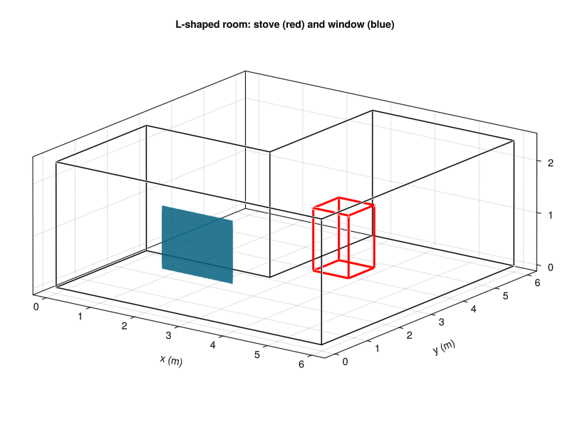
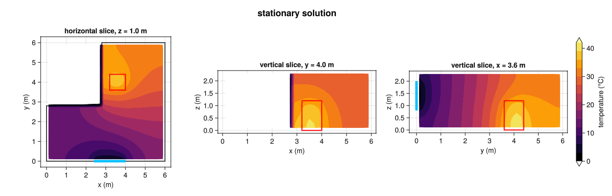
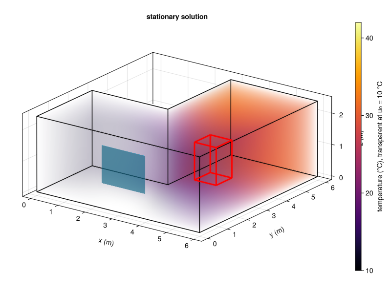
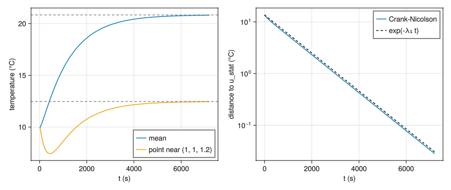
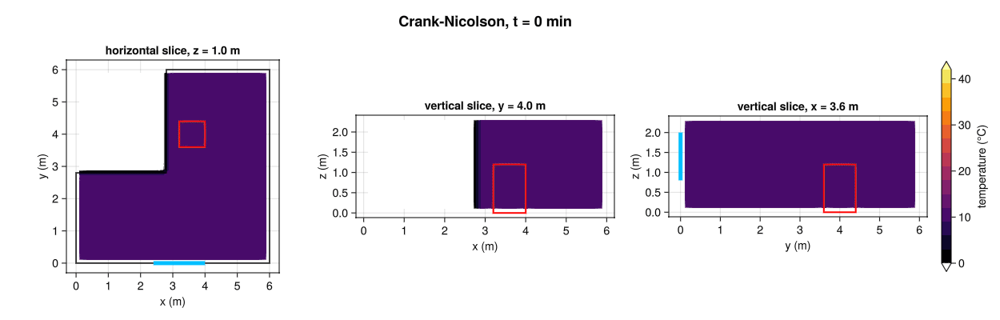
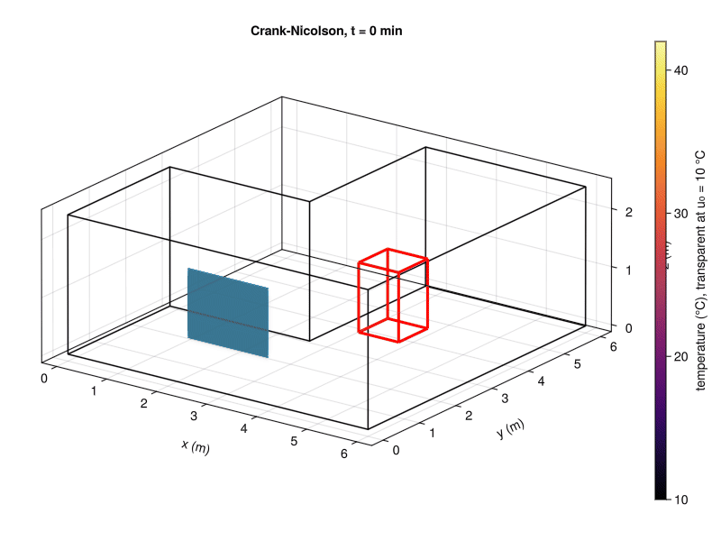

MAM4 - EDP1
2026-27
TP 2 bis - Équation de la chaleur en 3D
On reprend le TP 2 dans une vraie pièce en trois dimensions, avec des dimensions réalistes. On souhaite simuler l'évolution de la température dans une pièce en forme de L
- chauffée par un poêle situé dans la partie nord de la pièce (à l'ordonnée réduite $0.6$ à $0.8$, comme dans le TP 2),
- dont les parois, le sol et le plafond sont isolants,
- à l'exception d'une fenêtre située sur le mur du bas (mur sud), à une hauteur réaliste.
La température suit l'EDP de la chaleur 3D :
\[\begin{aligned} & \frac{\partial u}{\partial t} - \nu\Delta u = f,\quad t > 0,\quad (x,y,z) \in \Omega,\\ & u(0,x,y,z) = u_0,\quad (x,y,z) \in \Omega, \end{aligned}\]
avec des conditions aux limites appropriées sur le bord du domaine.
Le problème. Les longueurs sont en mètres, les températures en °C, le temps en secondes.

- Pièce. Le plan est le carré $]0,6[^2$ privé du bloc $[0,2.8]\times[2.8,6]$ (une aile sud de $6 \times 2.8$ m et une aile est de $3.2 \times 3.2$ m, soit $27$ m² au sol), et la hauteur sous plafond est $H = 2.4$ m. Sur les parois, le sol et le plafond, la condition est de Neumann homogène (isolation) :
\[\frac{\partial u}{\partial n} = 0.\]
- Fenêtre. Elle est sur le mur sud $y = 0$, pour $2.4 \le x \le 4$ (largeur $1.6$ m) et $0.8 \le z \le 2$ (hauteur $1.2$ m) : l'allège (hauteur du bas de la fenêtre) est de $0.8$ m et le haut est à $2$ m, ce qui correspond à des valeurs usuelles dans le bâtiment (allège de $0.8$ à $1$ m, haut à hauteur de porte). Sur la fenêtre, la température est imposée (Dirichlet inhomogène) : $u = u_w = 0$ °C.
- Poêle. Un poêle de $0.8 \times 0.8$ m au sol et $1.2$ m de haut, occupant $[3.2,4]\times[3.6,4.4]\times[0,1.2]$. Son ordonnée correspond à la plage $[0.6,0.8]$ du TP 2 ramenée à la profondeur de $6$ m de la pièce ($[3.6,4.8]$ m), et il est dans l'aile est, à $0.4$ m du mur intérieur. Il fournit une puissance $P = 1200$ W, répartie uniformément dans son volume $V$ : $f = P/(\rho c_p V)$ dans le poêle, $f = 0$ ailleurs, avec $\rho c_p \simeq 1.2\cdot10^3$ J/(m³ K) pour l'air.
- Diffusion. On prend $\nu = 0.02$ m²/s. C'est une diffusivité effective qui modélise le brassage de l'air par de faibles mouvements de convection : la valeur moléculaire de l'air ($2\cdot10^{-5}$ m²/s) donnerait des temps caractéristiques de plusieurs semaines pour une pièce de cette taille. C'est donc un modèle simplifié (pas de flottabilité : l'air chaud ne monte pas, il n'y a pas de stratification).
- Condition initiale. La pièce est à $u_0 = 10$ °C. Le temps final est $t_f = 2$ h $= 7200$ s.
Conventions numériques.
- Maillage en cellules. On découpe la boîte $]0,6[^2\times]0,H[$ en cellules cubiques de côté $h$ (un diviseur commun de toutes les dimensions, par exemple $h = 0.4,\ 0.2,\ 0.1$ m) et l'on garde les cellules contenues dans $\Omega$. L'inconnue $u_k$ approche la température au centre de la cellule $k$. En Julia, la cellule $(i,j,k)$ est repérée par ses indices en $x$, $y$ et $z$.
- Différences finies. On intègre $-\nu\Delta u = f$ sur chaque cellule : le flux à travers une face commune à deux cellules voisines est approché par $-\nu(u_l - u_k)/h$, un mur isolant ne donne aucun flux, et une face de la fenêtre est à la température $u_w$, à distance $h/2$ du centre de la cellule.
- Pas de temps. On fixe le pas de temps $\Delta t$ (en secondes), et on pose $\sigma := \nu\Delta t/h^2$.
- Distance à l'état stationnaire. On mesure la distance entre deux champs par l'écart quadratique moyen $\|u\| := \big(\frac{1}{K}\sum_k u_k^2\big)^{1/2}$ (en °C), où $K$ est le nombre de cellules.
Le code ci-dessous est à exécuter une fois en début de session. La visualisation utilise Makie (paquet GLMakie) : trois coupes de la température en contours remplis (contourf!) : une coupe horizontale à $1$ m de hauteur et deux coupes verticales passant par le poêle (en rouge) ; la fenêtre est en bleu et les cellules hors de la pièce sont en blanc. Une vue 3D (rendu volumique, volume3d) représente la chaleur comme un gaz coloré.
using SparseArrays, LinearAlgebra
# Physical data (SI units, temperatures in °C)
ν = 0.02 # effective diffusivity of the air, m²/s
uw = 0.0 # window temperature
u0 = 10.0 # initial temperature of the room
P = 1200.0 # stove power, W
ρc = 1.2 * 1005 # volumetric heat capacity ρ c_p of air, J/(m³ K)
tf = 7200.0 # final time: 2 h
# Geometry (m). Plan: ]0,6[² minus the block [0,2.8]×[2.8,6]; height H.
# Each range is (min, max); the window is on the south wall y = 0.
H = 2.4
corner = ((0.0, 2.8), (2.8, 6.0)) # removed block: x-range, y-range
window = ((2.4, 4.0), (0.8, 2.0)) # x-range, z-range (sill 0.8 m, top 2.0 m)
stove0 = ((3.2, 4.0), (3.6, 4.4), (0.0, 1.2)) # x-, y-, z-ranges
# Cells of size h (h must divide all the dimensions above). Cell (i, j, k): x, y, z.
# Returns: mask (cells in the room), win (cells touching the window), f (heating, K/s)
function room(h; stove = stove0)
function cells(r)
a, b = r ./ h
@assert abs(a - round(a)) < 1e-8 && abs(b - round(b)) < 1e-8 "h must divide the dimensions"
return (round(Int, a) + 1):round(Int, b)
end
Nx, Ny, Nz = round.(Int, (6.0, 6.0, H) ./ h)
mask = trues(Nx, Ny, Nz)
mask[cells(corner[1]), cells(corner[2]), :] .= false
win = falses(Nx, Ny, Nz)
win[cells(window[1]), 1, cells(window[2])] .= true
f = zeros(Nx, Ny, Nz)
V = prod(r[2] - r[1] for r ∈ stove) # volume of the stove, m³
f[cells(stove[1]), cells(stove[2]), cells(stove[3])] .= P / (ρc * V)
return mask, win, f
end
# Cell values (vector) → 3D array with NaN outside the room
field(u, mask) = (U = fill(NaN, size(mask)); U[mask] = u; U)using GLMakie
# Room outline, stove (red edges) and window (blue)
function box!(ax, (x0, x1), (y0, y1), (z0, z1); kw...)
P = [Point3f(x, y, z) for x ∈ (x0, x1), y ∈ (y0, y1), z ∈ (z0, z1)]
for (a, b) ∈ ((1, 2), (3, 4), (5, 6), (7, 8), (1, 3), (2, 4), (5, 7), (6, 8), (1, 5), (2, 6), (3, 7), (4, 8))
lines!(ax, [P[a], P[b]]; kw...)
end
end
function draw_room!(ax; stove = stove0, overdraw = false)
poly = [(0.0, 0.0), (6.0, 0.0), (6.0, 6.0), (corner[1][2], 6.0), (corner[1][2], corner[2][1]), (0.0, corner[2][1])]
for z ∈ (0.0, H)
lines!(ax, [Point3f(x, y, z) for (x, y) ∈ [poly; poly[1]]]; color = :black, overdraw = overdraw)
end
for (x, y) ∈ poly
lines!(ax, [Point3f(x, y, 0), Point3f(x, y, H)]; color = :black, overdraw = overdraw)
end
box!(ax, stove...; color = :red, linewidth = 3, overdraw = overdraw)
(x0, x1), (z0, z1) = window
mesh!(ax, Rect3f(Vec3f(x0, -0.01, z0), Vec3f(x1 - x0, 0.02, z1 - z0)); color = (:deepskyblue, 0.6), transparency = true)
end
# Filled contour plots of three orthogonal slices of the temperature U (an Observable 3D array,
# NaN outside the room); cells outside the room are drawn in white
levels = range(0, 42, length = 15) # one contour every 3 °C
nanfill(A) = map(a -> isnan(a) ? -1.0 : a, A)
function scene3d(U, x, y, z, title; stove = stove0, at = (3.6, 4.0, 1.0))
i, j, k = [argmin(abs.(c .- a)) for (c, a) ∈ zip((x, y, z), at)]
(sx, sy, sz), (wx, wz) = stove, window
kw = (colormap = :inferno, levels = levels, extendlow = :white, extendhigh = :auto)
fig = Figure(size = (1250, 400))
Label(fig[0, 1:3], title; fontsize = 18, font = :bold)
# (a) horizontal slice z = at[3]
ax1 = Axis(fig[1, 1]; aspect = DataAspect(), xlabel = "x (m)", ylabel = "y (m)", title = "horizontal slice, z = $(at[3]) m")
co = contourf!(ax1, x, y, lift(U -> nanfill(U[:, :, k]), U); kw...)
poly = [(0.0, 0.0), (6.0, 0.0), (6.0, 6.0), (corner[1][2], 6.0), (corner[1][2], corner[2][1]), (0.0, corner[2][1]), (0.0, 0.0)]
lines!(ax1, Point2f.(poly); color = :black)
lines!(ax1, Point2f.([(sx[1], sy[1]), (sx[2], sy[1]), (sx[2], sy[2]), (sx[1], sy[2]), (sx[1], sy[1])]); color = :red, linewidth = 2)
lines!(ax1, [Point2f(wx[1], 0), Point2f(wx[2], 0)]; color = :deepskyblue, linewidth = 5)
# (b) vertical slice y = at[2], through the stove
ax2 = Axis(fig[1, 2]; aspect = DataAspect(), xlabel = "x (m)", ylabel = "z (m)", title = "vertical slice, y = $(at[2]) m")
contourf!(ax2, x, z, lift(U -> nanfill(U[:, j, :]), U); kw...)
lines!(ax2, Point2f.([(sx[1], sz[1]), (sx[2], sz[1]), (sx[2], sz[2]), (sx[1], sz[2]), (sx[1], sz[1])]); color = :red, linewidth = 2)
# (c) vertical slice x = at[1], through the stove and the window
ax3 = Axis(fig[1, 3]; aspect = DataAspect(), xlabel = "y (m)", ylabel = "z (m)", title = "vertical slice, x = $(at[1]) m")
contourf!(ax3, y, z, lift(U -> nanfill(U[i, :, :]), U); kw...)
lines!(ax3, Point2f.([(sy[1], sz[1]), (sy[2], sz[1]), (sy[2], sz[2]), (sy[1], sz[2]), (sy[1], sz[1])]); color = :red, linewidth = 2)
lines!(ax3, [Point2f(0, wz[1]), Point2f(0, wz[2])]; color = :deepskyblue, linewidth = 5)
Colorbar(fig[1, 4], co; label = "temperature (°C)")
return fig, (ax1, ax2, ax3)
end
# 3D view: the heat is seen as a coloured gas (volume rendering). Cells at u₀ = 10 °C or colder are
# transparent; the hotter the cell, the brighter and the more opaque. U is an Observable 3D array.
const cmap = Makie.to_colormap(:inferno)
function heatgas(u; ulow = u0, uhigh = 42.0)
isnan(u) && return RGBAf(0, 0, 0, 0)
s = clamp((u - ulow) / (uhigh - ulow), 0, 1)
c = cmap[1 + round(Int, s * (length(cmap) - 1))]
return RGBAf(c.r, c.g, c.b, s)
end
function volume3d(U, title; stove = stove0)
fig = Figure(size = (800, 600))
ax = Axis3(fig[1, 1]; aspect = :data, azimuth = 1.7π, elevation = 0.35, title = title,
xlabel = "x (m)", ylabel = "y (m)", zlabel = "z (m)")
volume!(ax, (0, 6), (0, 6), (0, H), lift(U -> heatgas.(U), U); algorithm = :absorptionrgba, absorption = 5.0f0)
draw_room!(ax; stove = stove, overdraw = true) # edges drawn on top of the gas
Colorbar(fig[1, 2]; colormap = :inferno, limits = (u0, 42), label = "temperature (°C), transparent at u₀ = 10 °C")
return fig, ax
endExercice 1
On commence par le problème stationnaire (Poisson) : trouver $u$ telle que $-\nu\Delta u = f$ dans $\Omega$ avec les conditions aux limites ci-dessus. Le code suivant assemble la matrice $A$ et le second membre $b$ du système linéaire $Au = b$.
# Finite difference assembly of A ≃ -νΔ and b (heating + Dirichlet data): 7-point stencil.
# Cells are numbered with idx[mask] = 1:K (x runs fastest)
function assemble(mask, win, f, h; ν = 1.0, uw = 0.0)
K = count(mask)
idx = zeros(Int, size(mask))
idx[mask] = 1:K
rows, cols, vals = Int[], Int[], Float64[]
b = f[mask] # new array
nbrs = (CartesianIndex(-1, 0, 0), CartesianIndex(1, 0, 0), CartesianIndex(0, -1, 0),
CartesianIndex(0, 1, 0), CartesianIndex(0, 0, -1), CartesianIndex(0, 0, 1))
for c ∈ findall(mask) # c = CartesianIndex(i, j, k)
k = idx[c]
d = 0.0
for δ ∈ nbrs
n = c + δ
if checkbounds(Bool, mask, n) && mask[n] # neighbour in the room
push!(rows, k); push!(cols, idx[n]); push!(vals, -ν / h^2)
d += ν / h^2
end # else: insulating wall, no flux
end
if win[c] # Dirichlet face at distance h/2
d += 2ν / h^2
b[k] += 2ν / h^2 * uw
end
push!(rows, k); push!(cols, k); push!(vals, d)
end
return sparse(rows, cols, vals, length(b), length(b)), b, idx
end
h = 0.2
mask, win, f = room(h)
A, b, idx = assemble(mask, win, f, h; ν = ν, uw = uw)
K = size(A, 1)
x, y, z = [((1:n) .- 0.5) * h for n ∈ size(mask)] # cell centres
# Stationary solution: -νΔu = f (A is symmetric positive definite)
ustat = cholesky(Symmetric(A)) \ b
@show K extrema(ustat) sum(ustat) / K1.1 Montrer que, pour une cellule $k$, la ligne $k$ du système s'écrit
\[\frac{\nu}{h^2}\Big( n_k u_k - \sum_{l \sim k} u_l \Big) + \frac{2\nu}{h^2}\,u_k\,\mathbf{1}_{k \in W} = f_k + \frac{2\nu}{h^2}\,u_w\,\mathbf{1}_{k \in W},\]
où $l \sim k$ désigne les cellules voisines de $k$ dans $\Omega$ (au plus six), $n_k$ leur nombre et $W$ l'ensemble des cellules de la fenêtre. En déduire que $A$ est symétrique définie positive.
Réponse. On intègre $-\nu\Delta u = f$ sur la cellule $k$ (volume $h^3$) et on applique la formule de Green. Chaque face commune avec une cellule voisine $l \in \Omega$ (aire $h^2$) contribue $h^2\cdot\nu(u_k - u_l)/h$. Une face sur un mur isolant contribue $0$. Une face de la fenêtre contribue $h^2\cdot\nu(u_k - u_w)/(h/2)$. En divisant par $h^3$ on obtient la ligne annoncée. Donc
\[A = \frac{\nu}{h^2}\,L + \frac{2\nu}{h^2}\,D_W, \qquad b = f + \frac{2\nu}{h^2}\,u_w\,\mathbf{1}_W,\]
avec $L$ le laplacien du graphe des cellules, symétrique, et $D_W$ la diagonale de l'indicatrice de $W$. Pour tout $v$,
\[v^\top A v = \frac{\nu}{h^2}\sum_{\{k,l\}\ \text{voisines}} (v_k - v_l)^2 + \frac{2\nu}{h^2}\sum_{k \in W} v_k^2 \ \ge\ 0,\]
et si cette quantité est nulle, $v$ est constant (la pièce est connexe) puis nul sur $W$, qui est non vide : $A$ est définie positive. Sans la fenêtre, les constantes seraient dans le noyau de $A$ et le problème stationnaire n'aurait pas de solution (une pièce isolée et chauffée s'échauffe indéfiniment).
1.2 Vérifier numériquement, puis démontrer au niveau discret, le bilan d'énergie : la puissance du poêle $\rho c_p h^3\sum_k f_k$ est égale au flux de chaleur sortant par la fenêtre $\rho c_p h^3\sum_{k\in W}\frac{2\nu}{h^2}(u_k - u_w)$.
# Energy balance: stove power = heat flux through the window (in W)
power = ρc * h^3 * sum(f)
flux = ρc * h^3 * sum(2ν / h^2 * (ustat[idx[win]] .- uw))
@show power fluxRéponse. Les deux quantités valent $1200$ W (à $10^{-12}$ près en valeur relative). Démonstration : on somme les lignes du système, $\mathbf{1}^\top A u = \mathbf{1}^\top b$. Comme $L$ est symétrique et $L\mathbf{1} = 0$, on a $\mathbf{1}^\top L = 0$, et il reste
\[\frac{2\nu}{h^2}\sum_{k\in W} u_k = \sum_k f_k + \frac{2\nu}{h^2}\,u_w\,|W|, \quad\text{i.e.}\quad \sum_{k\in W}\frac{2\nu}{h^2}(u_k - u_w) = \sum_k f_k,\]
et il suffit de multiplier par $\rho c_p h^3$.
1.3 Tracer la solution stationnaire (contours remplis sur trois coupes). Commenter les températures observées : maximum, minimum, moyenne, et température loin du poêle.
# Contour plots of the stationary temperature (move the stove with room(h; stove = ...))
fig, _ = scene3d(Observable(field(ustat, mask)), x, y, z, "stationary solution")
display(fig)Réponse. Pour $h = 0.2$ ($K = 8112$ cellules), la température stationnaire varie de $1.6$ °C (cellules contre la fenêtre) à $40.3$ °C (dans le poêle), avec une moyenne de $20.8$ °C ; en un point à $1.2$ m de hauteur près de $(1,1)$, loin du poêle et près de la fenêtre, elle vaut $12.5$ °C. Le modèle est purement diffusif : il n'y a pas de stratification verticale, et les isothermes s'organisent autour du poêle (source) et de la fenêtre (puits).

Vue 3D de la même solution : la chaleur est représentée comme un gaz coloré (rendu volumique volume! de Makie), transparent à la température initiale $u_0 = 10$ °C et d'autant plus lumineux et opaque que la température est élevée. Le poêle est en rouge, la fenêtre en bleu.

1.4 Déplacer le poêle (argument stove de room, par exemple $[3.2,4]\times[0.4,1.2]\times[0,1.2]$, près de la fenêtre, puis $[4.8,5.6]\times[4.4,5.2]\times[0,1.2]$, au fond de l'aile est), à puissance égale. Que deviennent les températures moyenne et maximale ? Le bilan d'énergie change-t-il ?
Réponse. Le bilan ne change pas : le flux par la fenêtre vaut toujours $1200$ W. Pour $h = 0.2$ :
| poêle | moyenne | maximum |
|---|---|---|
| position du TP ($[3.2,4]\times[3.6,4.4]$) | $20.8$ °C | $40.3$ °C |
| près de la fenêtre ($[3.2,4]\times[0.4,1.2]$) | $11.4$ °C | $20.1$ °C |
| au fond de l'aile est ($[4.8,5.6]\times[4.4,5.2]$) | $22.1$ °C | $47.1$ °C |
Près de la fenêtre, la chaleur est évacuée avant de s'être répartie : la pièce est nettement plus froide ($11.4$ °C en moyenne). Éloigner le poêle de la fenêtre réchauffe la pièce, mais de moins en moins : au fond de l'aile est, la moyenne ne gagne que $1.2$ °C par rapport à la position du TP, tandis que le maximum monte de $7$ °C (le poêle est dans un cul-de-sac où la chaleur diffuse mal). La position du poêle par rapport à la fenêtre compte donc davantage que la puissance seule.
1.5 Validation. Pour vérifier le code d'assemblage 3D, on prend le cube $]0,1[^3$ avec $u = 0$ sur toute la face du bas et Neumann ailleurs, et $f(x,y,z) = \nu\frac{\pi^2}{4}\sin\big(\frac{\pi z}{2}\big)$. Donner la solution exacte, puis calculer l'erreur maximale pour $N = 8, 16, 32$ cellules par côté et en déduire l'ordre observé.
# Validation: unit cube, u = 0 on the whole bottom face, Neumann elsewhere,
# f = (π²/4) sin(πz/2) (ν = 1); exact solution u = sin(πz/2)
function test_cube(N)
h = 1 / N
mask = trues(N, N, N)
win = falses(N, N, N)
win[:, :, 1] .= true
z = ((1:N) .- 0.5) * h
f = repeat(reshape(π^2 / 4 * sin.(π * z / 2), 1, 1, N), N, N, 1)
A, b, _ = assemble(mask, win, f, h) # ν = 1, uw = 0
u = cholesky(Symmetric(A)) \ b
return maximum(abs.(u - vec(repeat(reshape(sin.(π * z / 2), 1, 1, N), N, N, 1))))
end
for N ∈ (8, 16, 32)
println("N = $N: max error = $(test_cube(N))")
endRéponse. La solution exacte est $u(x,y,z) = \sin(\pi z/2)$ : elle vérifie $-\nu u_{zz} = \nu\frac{\pi^2}{4}\sin(\pi z/2)$, $u = 0$ en $z = 0$, $\partial_z u(\cdot,\cdot,1) = \frac{\pi}{2}\cos\frac{\pi}{2} = 0$ et $\partial_x u = \partial_y u = 0$. Les erreurs sont $3.2\cdot10^{-3}$, $8.0\cdot10^{-4}$, $2.0\cdot10^{-4}$ : divisées par $4$ quand $h$ est divisé par $2$, soit un ordre $2$.
1.6 Convergence et coût sur la pièce. Pour $h = 0.4,\ 0.2,\ 0.1$, calculer le nombre d'inconnues $K$, la température moyenne et maximale, et le nombre de coefficients non nuls de $A$ et de son facteur de Cholesky $L$. Quel ordre observe-t-on ? Estimer le coût mémoire pour $h = 0.05$.
# Convergence on the room: mean and maximum temperature, size of the factors
function steady(h)
mask, win, f = room(h)
A, b, idx = assemble(mask, win, f, h; ν = ν, uw = uw)
F = cholesky(Symmetric(A))
u = F \ b
return size(A, 1), sum(u) / size(A, 1), maximum(u), nnz(A), nnz(sparse(F.L))
end
for h ∈ (0.4, 0.2, 0.1)
K, m, M, nA, nL = steady(h)
println("h = $h: K = $K, mean = $m, max = $M, nnz(A) = $nA, nnz(L) = $nL")
endRéponse. On obtient
| $h$ | $0.4$ | $0.2$ | $0.1$ |
|---|---|---|---|
| $K$ | $1014$ | $8112$ | $64896$ |
| température moyenne (°C) | $22.60$ | $20.84$ | $20.03$ |
| température maximale (°C) | $42.50$ | $40.26$ | $39.22$ |
nnz(A) | $6400$ | $53992$ | $443104$ |
nnz(L) | $39480$ | $747749$ | $17889103$ |
Les différences successives de la moyenne sont $1.76$ puis $0.81$ : leur rapport est proche de $2$, donc la convergence est d'ordre $1$, comme dans le cas 2D (singularités de la solution aux arêtes de la fenêtre, où la condition passe de Dirichlet à Neumann, et au coin rentrant de la pièce) ; celle du maximum est du même type. Le nombre d'inconnues est multiplié par $8$ à chaque raffinement, mais nnz(L) par $19$ puis $24$ : le remplissage du facteur de Cholesky croît plus vite que $K$ en 3D (comme $K^{4/3}$ pour un bon ordonnancement), alors que nnz(A) est de l'ordre de $7K$. Pour $h = 0.05$ on aurait $K \simeq 5\cdot10^{5}$ et nnz(L) de l'ordre de $4\cdot10^{8}$, soit plus de $3$ Go : une factorisation directe devient coûteuse, et l'on passerait à des méthodes itératives (gradient conjugué préconditionné).
Exercice 2
On calcule maintenant l'évolution temporelle de la température, avec le $\theta$-schéma
\[(I + \theta\Delta t\,A)\,u^{n+1} = \big(I - (1-\theta)\Delta t\,A\big)u^n + \Delta t\,b,\]
où $A$ et $b$ sont ceux de l'exercice 1. Le cas $\theta = 0$ est le schéma explicite, $\theta = 1$ le schéma d'Euler implicite et $\theta = \tfrac12$ le schéma de Crank-Nicolson.
2.1 Stabilité. Montrer que, comme en 2D, le schéma de Crank-Nicolson est stable pour tout $\Delta t > 0$. Montrer que $\lambda_{\max}(A) \le 12\nu/h^2$ et en déduire une condition suffisante de stabilité du schéma explicite. Calculer le pas de temps maximal en secondes pour $h = 0.2$ et le nombre de pas pour atteindre $t_f$.
Réponse. $A$ est symétrique définie positive, de valeurs propres $0 < \lambda_1 \le \dots \le \lambda_K$. Sur un mode propre, le $\theta$-schéma multiplie l'amplitude par $a = \frac{1 - (1-\theta)\Delta t\lambda}{1 + \theta\Delta t\lambda}$. Pour $\theta = \frac12$, $|a| < 1$ pour tout $\Delta t > 0$. Pour $\theta = 0$, $|a| \le 1$ pour tous les modes si et seulement si $\Delta t\lambda_K \le 2$. D'après Gershgorin, chaque valeur propre est dans un disque de centre $A_{kk} \le 6\nu/h^2$ et de rayon $\frac{\nu}{h^2}n_k \le 6\nu/h^2$ (pour une cellule de la fenêtre, $A_{kk} = (n_k + 2)\nu/h^2$ avec $n_k \le 5$), donc $\lambda_K \le 12\nu/h^2$ et $\sigma = \nu\Delta t/h^2 \le \frac16$ suffit. Pour $h = 0.2$ : $\Delta t \le h^2/(6\nu) = 0.33$ s, donc plus de $21\,000$ pas pour $t_f = 7200$ s, contre $240$ pas pour Crank-Nicolson avec $\Delta t = 30$ s. Numériquement $\lambda_K = 5.9 \simeq 12\nu/h^2 = 6$ : la condition est quasiment nécessaire.
2.2 Compléter la fonction evolve (# TBC) pour programmer le $\theta$-schéma, puis exécuter Crank-Nicolson avec $\Delta t = 30$ s. Relever la température moyenne et la température en un point à $1.2$ m de hauteur près de $(1,1)$ au bout de $10$ min, $30$ min, $1$ h et $2$ h. Comparer la distance à la solution stationnaire à la vitesse $e^{-\lambda_1 t}$ du mode le plus lent, où $\lambda_1$ est la plus petite valeur propre de $A$.
# θ-scheme: (I + θΔt A) uⁿ⁺¹ = (I - (1-θ)Δt A) uⁿ + Δt b.
# θ = 0: explicit, θ = 1/2: Crank-Nicolson, θ = 1: implicit Euler.
# `startup = true` replaces the first step by two implicit Euler steps of size Δt/2 (question 2.4)
Id = sparse(1.0I, K, K)
nsteps(Δt, T) = ceil(Int, T / Δt - 1e-9)
dist(u) = norm(u - ustat) / sqrt(K) # r.m.s. distance to the stationary solution, °C
function evolve(θ, Δt; T = tf, startup = false, callback = (n, t, u) -> nothing)
Nt = nsteps(Δt, T)
Δt = T / Nt
F = cholesky(Symmetric(Id + θ * Δt * A)) # factorisation, once and for all
E = Id - (1 - θ) * Δt * A
u = fill(u0, K) # initial temperature
err = [dist(u)]
callback(0, 0.0, u)
for n ∈ 1:Nt
if startup && n == 1
Fh = cholesky(Symmetric(Id + Δt / 2 * A))
u = Fh \ (u + Δt / 2 * b)
u = Fh \ (u + Δt / 2 * b)
else
u = F \ (E * u + Δt * b)
end
push!(err, dist(u))
callback(n, n * Δt, u)
end
return u, err, Δt
end
# Crank-Nicolson, Δt = 30 s (σ = νΔt/h² = 15): temperature at a point and mean temperature
ipt = idx[argmin(abs.(x .- 1.0)), argmin(abs.(y .- 1.0)), argmin(abs.(z .- 1.2))] # near (1, 1, 1.2)
Tpt, Tmean = Float64[], Float64[]
u, err, Δt = evolve(0.5, 30.0; callback = (n, t, u) -> (push!(Tpt, u[ipt]); push!(Tmean, sum(u) / K)))
@show Tpt[[1, 21, 61, 121, 241]] Tmean[[1, 21, 61, 121, 241]] ustat[ipt] sum(ustat) / K
# Slowest mode of A: inverse iteration (a Cholesky factorisation, reused at each step);
# fastest mode: power iteration
function extreme_eigenvalues(A)
K = size(A, 1)
F = cholesky(Symmetric(A))
v = randn(K)
for _ ∈ 1:30
v = F \ v
v /= norm(v)
end
λ1 = dot(v, A * v)
v = randn(K)
for _ ∈ 1:300
v = A * v
v /= norm(v)
end
return λ1, dot(v, A * v)
end
λ1, λK = extreme_eigenvalues(A)
@show λ1 1 / λ1 λK 12ν / h^2 err[end] / err[1] exp(-λ1 * tf)Réponse. Pour $\Delta t = 30$ s ($\sigma = 15$) :
| $t$ | $0$ | $10$ min | $30$ min | $1$ h | $2$ h | stationnaire |
|---|---|---|---|---|---|---|
| température moyenne (°C) | $10.0$ | $13.6$ | $18.2$ | $20.3$ | $20.8$ | $20.8$ |
| point près de $(1,1,1.2)$ (°C) | $10.0$ | $7.6$ | $10.5$ | $12.0$ | $12.5$ | $12.5$ |
La température moyenne monte vite (le poêle chauffe tout le volume), mais le point proche de la fenêtre et éloigné du poêle commence par se refroidir ($7.6$ °C au bout de $10$ min : la fenêtre agit avant que la chaleur du poêle n'arrive), et ne regagne sa température initiale qu'après environ $20$ min. La distance à la solution stationnaire décroît comme $e^{-\lambda_1 t}$ avec $\lambda_1 = 8.47\cdot10^{-4}$ s⁻¹, soit une constante de temps $1/\lambda_1 \simeq 1180$ s $\simeq 20$ min : en $2$ h elle est divisée par $482$ (observé), contre $e^{-\lambda_1 t_f} = 1/445$ (prédit) : les modes plus rapides se sont éteints, et le mode le plus lent domine à $8\,\%$ près.


La même évolution en 3D (rendu volumique, une image par minute, la caméra fait un tour complet) : on voit la chaleur se former au poêle, monter et remplir l'aile est, puis gagner l'aile sud, tandis que la zone devant la fenêtre reste froide.

2.3 Schéma explicite. Exécuter le schéma explicite pendant $600$ s avec $\Delta t = 0.3$ s puis $\Delta t = 0.34$ s. Commenter.
# Explicit scheme just below and just above Δt = h²/(6ν), over 600 s
for Δt ∈ (0.3, 0.34)
uex, e, _ = evolve(0.0, Δt; T = 600.0)
println("explicit, Δt = $Δt (σ = $(ν * Δt / h^2)): max|u| = $(maximum(abs, uex))")
endRéponse. Avec $\Delta t = 0.3$ s ($\sigma = 0.15 < \frac16$), la solution reste bornée ($\max|u| = 31$), alors que pour $\Delta t = 0.34$ s ($\sigma = 0.17 > \frac16$) le schéma explose : $\max|u| = 1\cdot10^{11}$ au bout de $600$ s. Le seuil observé coïncide avec $\Delta t_{\max} = 2/\lambda_K = 0.34$ s. Le pas explicite est borné par la plus petite maille ; le schéma implicite n'a pas cette contrainte.
2.4 Donnée initiale incompatible. La donnée initiale ($10$ °C) est incompatible avec la condition à la fenêtre ($0$ °C). Comparer, à $t = 120,\ 600,\ 1800$ s, la plus grande erreur $\max_k|u_k - u_k^{\mathrm{ref}}|$ de Crank-Nicolson avec $\Delta t = 30$ s et d'Euler implicite avec $\Delta t = 30$ s, par rapport à une référence (Crank-Nicolson avec $\Delta t = 1$ s). Expliquer, à l'aide du facteur d'amplification $a(\lambda)$ des modes rapides, ce qui se passe pour Crank-Nicolson. Proposer et programmer un remède : le démarrage de Rannacher, qui remplace le premier pas de Crank-Nicolson par deux pas d'Euler implicite de taille $\Delta t/2$ (option startup de evolve).
# Crank-Nicolson with Δt = 30 s, with and without startup, and implicit Euler,
# compared with a reference (Crank-Nicolson, Δt = 1 s, with startup): max |u - u_ref| in °C
times = (120.0, 600.0, 1800.0)
function snapshots(θ, Δt; startup = false)
out = Dict{Float64, Vector{Float64}}()
evolve(θ, Δt; T = 1800.0, startup = startup, callback = (n, t, u) -> (t ∈ times && (out[t] = copy(u))))
return out
end
ref = snapshots(0.5, 1.0; startup = true)
for (name, θ, startup) ∈ (("CN", 0.5, false), ("CN + startup", 0.5, true), ("implicit Euler", 1.0, false))
s = snapshots(θ, 30.0; startup = startup)
println(name, ": ", [round(maximum(abs.(s[t] - ref[t])), digits = 3) for t ∈ times])
endRéponse. Les erreurs maximales (en °C) à $t = 120,\ 600,\ 1800$ s sont :
| schéma | $120$ s | $600$ s | $1800$ s |
|---|---|---|---|
| Crank-Nicolson | $4.68$ | $1.18$ | $0.17$ |
| Crank-Nicolson avec démarrage | $0.039$ | $0.002$ | $< 10^{-3}$ |
| Euler implicite | $0.39$ | $0.14$ | $0.07$ |
La donnée initiale présente un saut de $10$ °C à la fenêtre, donc elle contient beaucoup de modes rapides. Pour Crank-Nicolson, $a(\lambda) = \frac{1 - z}{1 + z}$ avec $z = \Delta t\lambda/2$ ; pour les modes les plus raides, $z \simeq 30\cdot5.9/2 \simeq 89$ et $a \simeq -0.98$ : ces modes sont à peine amortis et changent de signe à chaque pas, ce qui donne des oscillations dont l'amplitude atteint $4.7$ °C. Euler implicite amortit ces modes ($a = 1/(1+z) \simeq 0.01$) mais n'est que d'ordre $1$, d'où une erreur plus grande en temps long. Le démarrage de Rannacher fait disparaître les oscillations (deux pas d'Euler implicite de taille $\Delta t/2$ amortissent les modes rapides) et conserve l'ordre $2$ ensuite : c'est le meilleur des trois.
Annexe. Figures et animations
Le code suivant produit les figures et les GIF du corrigé ; il utilise les objets définis plus haut (GLMakie ouvre une fenêtre : pour exécuter l'annexe sans écran, par exemple sur un serveur, lancer Julia avec xvfb-run).
# Geometry of the room (used in the statement)
fig = Figure(size = (800, 600))
ax = Axis3(fig[1, 1]; aspect = :data, azimuth = 1.7π, elevation = 0.3, xlabel = "x (m)", ylabel = "y (m)", zlabel = "z (m)",
title = "L-shaped room: stove (red) and window (blue)")
draw_room!(ax)
save("chaleur3d_piece.png", fig)
# Stationary temperature (question 1.3)
fig, _ = scene3d(Observable(field(ustat, mask)), x, y, z, "stationary solution")
save("chaleur3d_stationnaire.png", fig)
# Stationary temperature in 3D (question 1.3)
fig, _ = volume3d(Observable(field(ustat, mask)), "stationary solution")
save("chaleur3d_volume.png", fig)
# Temperature in time (question 2.2): Crank-Nicolson, Δt = 30 s
ts = 0:30:tf
fig = Figure(size = (900, 380))
ax1 = Axis(fig[1, 1]; xlabel = "t (s)", ylabel = "temperature (°C)")
lines!(ax1, ts, Tmean; label = "mean")
lines!(ax1, ts, Tpt; label = "point near (1, 1, 1.2)")
hlines!(ax1, [sum(ustat) / K, ustat[ipt]]; color = :gray, linestyle = :dash)
axislegend(ax1; position = :rb)
ax2 = Axis(fig[1, 2]; xlabel = "t (s)", ylabel = "distance to u_stat (°C)", yscale = log10)
lines!(ax2, ts, err; label = "Crank-Nicolson")
lines!(ax2, ts, err[1] * exp.(-λ1 * ts); color = :black, linestyle = :dash, label = "exp(-λ₁ t)")
axislegend(ax2; position = :rt)
save("chaleur3d_temps.png", fig)
# Animation (question 2.2): 61 frames, one every 2 minutes
frames = Tuple{Float64, Vector{Float64}}[]
evolve(0.5, 30.0; startup = true, callback = (n, t, u) -> (n % 4 == 0 && push!(frames, (t, copy(u)))))
U = Observable(field(fill(u0, K), mask))
title = Observable("t = 0 min")
fig, _ = scene3d(U, x, y, z, title)
record(fig, "chaleur3d_cn.gif", eachindex(frames); framerate = 10) do i
t, u = frames[i]
U[] = field(u, mask)
title[] = "Crank-Nicolson, t = $(round(Int, t / 60)) min"
end
# Animation in 3D (question 2.2): 121 frames, one every minute, the camera making one full turn
frames = Tuple{Float64, Vector{Float64}}[]
evolve(0.5, 30.0; startup = true, callback = (n, t, u) -> (n % 2 == 0 && push!(frames, (t, copy(u)))))
U = Observable(field(fill(u0, K), mask))
fig, ax = volume3d(U, "")
record(fig, "chaleur3d_volume.gif", eachindex(frames); framerate = 12) do i
t, u = frames[i]
U[] = field(u, mask)
ax.title[] = "Crank-Nicolson, t = $(round(Int, t / 60)) min"
ax.azimuth[] = 1.7π + 2π * (i - 1) / length(frames)
end